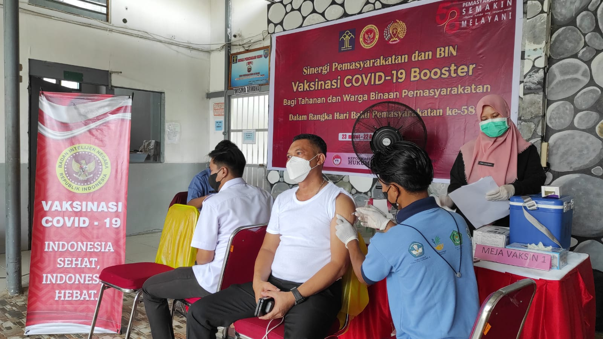
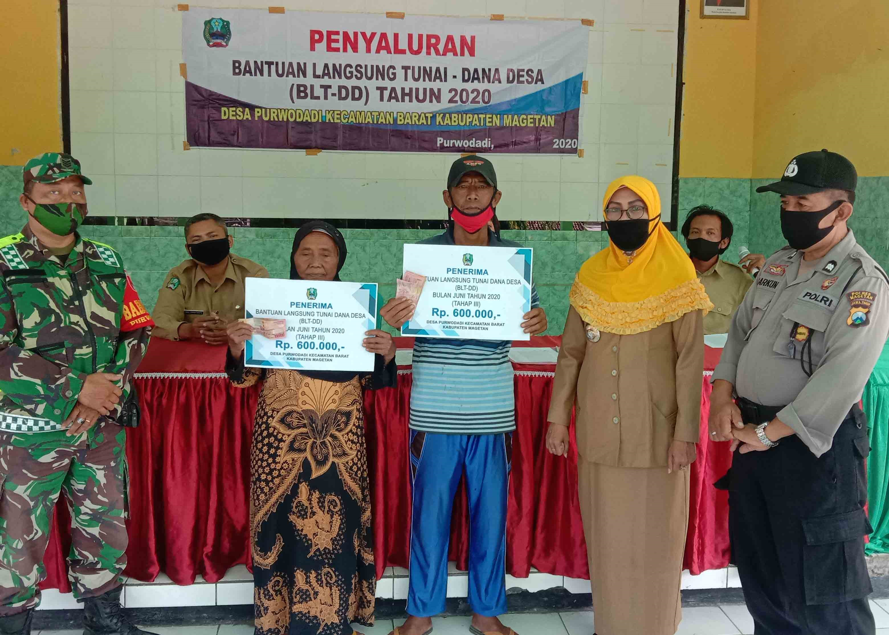
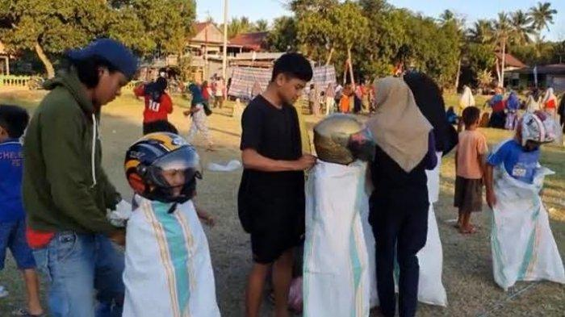
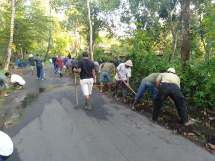

O857197887O8
@Desa_Cikarang
SELAMAT DATANG DI DESA CIKARANG
Desa Cikarang, Rt 002/ Rw 001, Kecamatan Cikarang Utara,
Kabupaten Bekasi, Provinsi Jawa Barat, 17531.
Jumlah Pengunjung
PAGE VIEWS
FIRST TIME VISITORS
Berita Terkini
Penyusunan Rancangan Peraturan Desa
Terkait dengan kewenangan yang dimiliki desa dalam Undang-Undang Nomor 32 Tahun 2004 dan Peraturan Pemerintah republic Indonesia nomor 72 tahun 2005, yakni : Urusan pemerintahan yang sudah ada berdasarkan hak asal-usul desa. Urusan pemerintahan yang menjadi kewenangan kabupaten/kota yang diserahkan pengaturannya kepada desa. Tugas pembantuan dari Pemerintah, pemerintah propinsi, dan/atau pemerintah kabupaten/kota. Urusan pemerintahan lainnya yang oleh peraturan perundangperundangan diserahkan kepada desa. Berdasarkan empat kewenangan yang dimiliki desa sesungguhnya tersirat bahwa desa merupakan institusi pemerintah yang merupakan perpanjangan tangan dari organ pemerintah diatasnya.
Manfaat adanya website desa
Perkembangan teknologi komunikasi dan informasi terutama internet saat ini membawa kemajuan yang sangat pesat di berbagai bidang kehidupan. Dengan adanya website membantu banyak pihak dari individu, organisasi, pemerintah bahkan swasta untuk bisa menghadirkan informasi terkini melalui media digital. Hal ini pun yang semakin menjadi perhatian khusus bagi pemerintah desa untuk mengembangkan pelayanan dan meningkatkan berbagai aspek kehidupan masyarakat. Ada banyak manfaat website untuk desa yang dapat membantu kemajuan desa tersebut, apa saja manfaatnya? Pemerintah kini semakin menyadari besarnya manfaat website untuk desa, hal ini dibuktikan dengan peluncuran ekstensi domain desa.id sebagai ekstensi domain resmi untuk website desa yang ada. Hal ini menunjukkan bahwa pemerintah mulai serius untuk memfasilitasi desa dalam mengembangkan layanan dan informasi berbasis website. Berikut ini manfaat website untuk desa yang sangat penting untuk anda ketahui.

Pemberian vaksinisasi pada masyarakat desa cikarang. Program Vaksinasi yang saat ini gencar dilakukan oleh Pemerintah Daerah Cikarang, rupanya disambut hangat oleh sejumlah pihak salah satunya yakni organisasi sosial perempuan jenggala yang turut serta membantu program percepatan Vaksinasi dengan memberikan kurang lebih sebanyak 7000 vaksin bagi masyarakat Cikarang.

Bantuan langsung tunai balai desa. Bupati Bekasi menyalurkan secara simbolis Bantuan Langsung Tunai (BLT) Dana Desa (DD) bertempat di Desa Cikarang, Sabtu (01/10/2022).

Lomba 17 agustus di desa cikarang. Memeriah kan HUT RI ke-76 pemuda desa cikarang,kecamatan cikarang utara mengadakan beberapa perlombaan yang diadakan dilapangan Dara,dusun cibarusah,desa cikarang,kecamatan cikarang utara.

Kegiatan gotong royong desa cikarang. Masyarakat Desa Cikarang pada hari Minggu kemarin Pukul 07:00 pagi berkumpul bnersama dan bapak Perbekel Desa Cikarang memberikan arahan untuk pelaksanaan Gotongroyong di karenakan sudah mendekati musim hujan untuk antisipasi hal yang tak di inginkan seperti Got mampet saat hujan hingga air kali membanjiri jalan dan banyak sampah yang berserakan